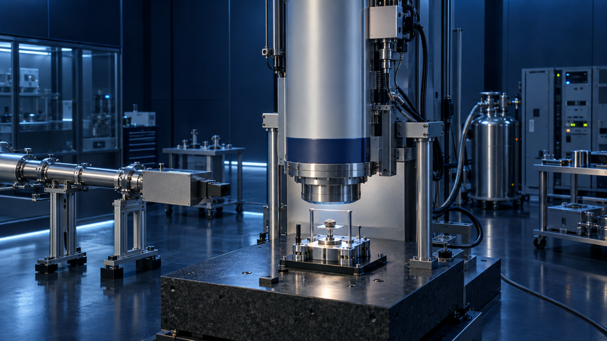
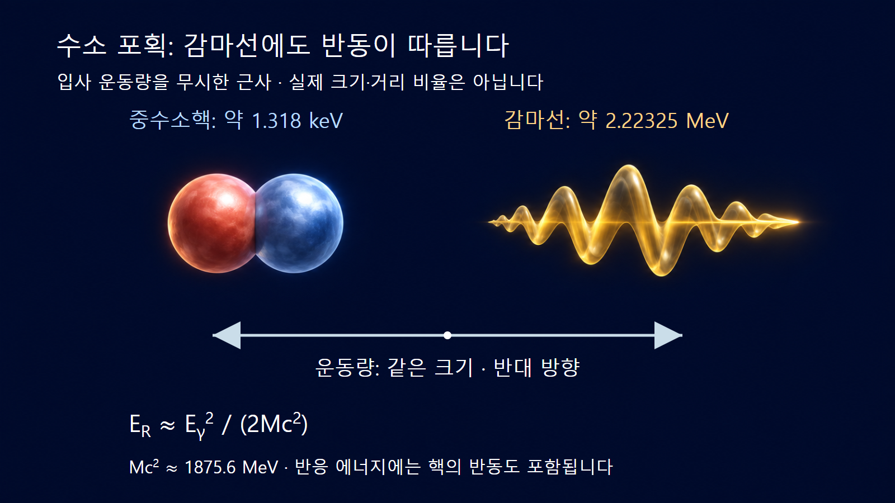
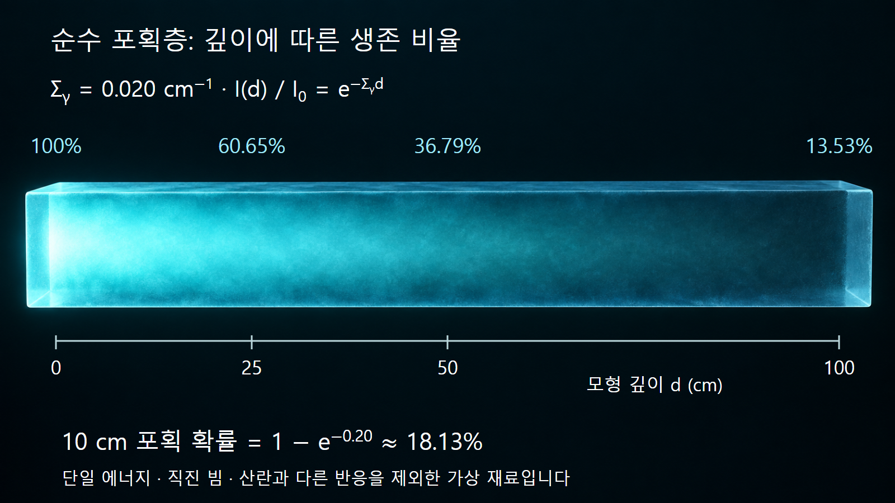

질량·에너지와 핵반응 · 032
중성자 포획
감마선·반동·반응률로 이해하는 (n,γ) 반응

중성자의 방사포획은 원자핵이 중성자를 받아들인 뒤 감마선을 방출하며 더 무거운 동위원소로 남는 반응입니다. (n,γ)로 표기하며 핵의 원자번호 Z는 같고 질량수 A는 하나 증가합니다. 포획으로 중성자는 사라지지만, 생성핵이 반드시 방사성인 것은 아닙니다.
1. 중성자 하나가 핵에 남습니다
방사포획의 전체 반응은 AX + n → A+1X + γ들로 나타냅니다. 감마선은 하나 또는 여러 개일 수 있습니다. 복합핵 모형에서는 먼저 들뜬 복합핵이 형성되고 전이 과정에서 에너지를 내놓는 것으로 설명합니다. 핵종과 에너지에 따라 직접포획도 기여하므로 모든 방사포획을 같은 수명의 복합핵 과정으로 단정하지 않습니다.
산란에서는 나가는 중성자가 존재하지만 방사포획에서는 들어온 중성자가 생성핵에 남습니다. 한편 ‘흡수’는 중성자가 소실되는 여러 반응을 묶어 쓰는 더 넓은 개념입니다. 예를 들어 (n,α)와 핵분열까지 포함하는 흡수 합계를 (n,γ) 포획 단면적과 혼용하면 반응률을 잘못 계산합니다. ENDF에서 방사포획은 MT=102로 식별합니다. [3]
2. 느린 중성자도 큰 에너지의 감마선을 만들 수 있습니다
포획 전후 질량 차이에 해당하는 에너지가 방출됩니다. 생성핵의 중성자 분리에너지는 역반응에서 중성자를 떼어 내는 데 드는 에너지이므로, 포획에서는 그 에너지를 돌려받는 관계가 됩니다. 따라서 eV보다 작은 운동에너지의 중성자가 들어와도 MeV 규모의 감마선이 나올 수 있습니다. 중성자 운동에너지만 감마선으로 바뀌는 것이 아닙니다.
예시 1｜수소 원자핵에 느린 중성자가 포획되면 1H(n,γ)2H 반응으로 중수소가 생깁니다. 반응 에너지는 약 2.2246 MeV이고, TUNL이 수록한 EGAF 평가의 대표 감마선 에너지는 약 2.22325 MeV입니다. 두 수치를 똑같이 취급하지 않습니다. 반동하는 생성핵도 운동에너지를 가지기 때문입니다.
입사 중성자의 운동량을 무시하고 광자 운동량 Eγ/c와 반대인 핵의 운동량을 고려하면, 비상대론적 핵 반동은 ER ≈ Eγ2/(2Mc2)입니다. 중수소핵의 정지에너지를 약 1875.6 MeV로 두면 (2.22325)2/(2 × 1875.6) MeV ≈ 0.001318 MeV = 1.318 keV입니다. 입사 중성자의 매우 작은 에너지를 무시한 근사에서 감마선과 반동의 합이 포획 에너지를 설명합니다. 원자 결합·열운동까지 포함한 정밀 분광 계산과는 구분합니다.

3. 단면적은 포획을 만날 가능성을 나타냅니다
미시적 포획 단면적 σγ는 핵 하나의 반응 특성을 면적 단위로 나타내며 1 b = 10−24 cm2입니다. 표적 수밀도 N을 곱한 거시적 포획 단면적 Σγ = Nσγ의 단위는 cm−1입니다. 단면적을 핵의 기하학적 단면과 같다고 생각하거나 에너지에 무관한 고정값으로 사용하면 안 됩니다.
단일 에너지에서 국소 중성자속을 φ라 하면 단위 부피당 포획률은 Rγ = Σγφ입니다. 여러 방향의 중성자가 있는 경우 φ는 방향을 합한 스칼라 중성자속이며, 단순히 한 면을 통과하는 순전류와 같지 않습니다. 에너지 분포가 넓으면 N∫σγ(E)φ(E)dE로 합산해야 합니다.
4. 가상 재료에서 포획률을 검산합니다
예시 2｜특정 입사 에너지에서 σγ = 2 b, N = 1.0 × 1022 cm−3, 국소 φ = 1.0 × 1012 cm−2s−1인 가상 재료를 가정합니다. 먼저 Σγ = 1022 × 2 × 10−24 = 0.020 cm−1입니다. 따라서 Rγ = 0.020 × 1012 = 2.0 × 1010 cm−3s−1입니다. 균일한 1 cm3에서 초당 약 200억 회의 포획에 해당합니다.
이 수치는 실제 물이나 수소의 단면적을 사용한 결과가 아닙니다. 표적의 소모를 무시할 수 있는 초기 상태이고 주어진 국소 중성자속이 유지된다는 계산 조건입니다. 생성핵이 방사성이더라도 이 반응률을 곧바로 시료의 방사능으로 바꾸지 않습니다. 조사 중 생성과 붕괴의 경쟁 및 조사 뒤 냉각시간을 계산해야 하기 때문입니다.
| 물리량 | 가상 재료의 입력·결과 | 해석 |
|---|---|---|
| 미시적 단면적 | 2 b | 지정 에너지에서 핵 하나의 포획 특성입니다. |
| 거시적 단면적 | 0.020 cm−1 | 수밀도까지 반영한 물질의 계수입니다. |
| 국소 포획률 | 2.0 × 1010 cm−3s−1 | 주어진 국소 중성자속에서의 부피당 반응률입니다. |
| 10 cm 순수 포획층의 포획 확률 | 약 18.13% | 아래의 별도 직진 빔·무산란 가정에 적용합니다. |
5. 두꺼운 재료에서는 입구의 중성자속을 전체에 곱하지 않습니다
예시 3｜같은 Σγ = 0.020 cm−1인 균질층을 생각하되, 이번에는 산란과 다른 반응이 없는 순수 포획 모형의 직진 단일에너지 빔을 가정합니다. 두께 d에서 살아남는 비율은 exp(−Σγd), 포획되는 비율은 1 − exp(−Σγd)입니다. d = 10 cm이면 포획 확률은 1 − exp(−0.20) = 0.18127, 약 18.13%입니다.
얇은 층 근사 Σγd를 그대로 쓰면 20%가 되어 약 1.87%포인트 높게 평가합니다. 더 두꺼운 층에서는 앞부분에서 중성자가 줄어들기 때문에 두께와 포획 확률이 비례하지 않습니다. 실제 재료에서는 산란이 방향·에너지·체류거리를 바꾸므로 이 단순 지수식을 그대로 전체 포획 확률로 적용하지 않습니다. 입구 중성자속과 재료 내부의 국소 중성자속을 구별해야 합니다.

6. 포획 감마선은 원소 분석에도 사용합니다
즉발감마선 방사화분석(PGAA)은 중성자를 조사하면서 나오는 특징적인 감마선을 측정하여 시료의 원소 성분을 알아보는 방법입니다. 감마선 에너지는 성분 식별에, 보정된 피크 계수율은 양의 평가에 사용합니다. [2] 같은 조건에서 조사한 표준시료와 비교하고 검출 효율·배경·시료 내 중성자 및 감마선 감쇠를 다뤄야 하므로 피크 높이만 원소 농도로 읽지 않습니다.
수소 포획의 생성물인 중수소는 안정 핵종입니다. 이 경우 조사 중의 포획 감마선을 이용할 수 있어도, 중수소의 방사성붕괴를 기다려 같은 신호를 측정하지는 않습니다. ‘포획하면 반드시 방사화된다’는 설명이 틀리는 간단한 사례입니다. 다른 표적에서는 방사성 생성핵이 남을 수 있으므로 조사 중 즉발 신호와 조사 뒤 붕괴 신호를 따로 평가합니다.
7. 1/v 법칙은 적용 구간을 확인합니다
많은 핵종의 낮은 에너지 구간에서는 포획 단면적이 중성자 속도 v에 대략 반비례합니다. 그러나 공명 영역이나 비-1/v 흡수체에서는 성립하지 않을 수 있습니다. ‘느릴수록 항상 잘 포획된다’는 문장만으로 모든 에너지의 핵자료를 대체하지 않습니다.
포획률이 어떻게 변하는지도 무엇을 고정했는지에 따라 다릅니다. 같은 중성자속에서 σ가 두 배이면 포획률도 두 배입니다. 반대로 중성자 수밀도를 고정하면 φ = nv가 함께 변하므로, 이상적인 1/v 구간의 σv 곱은 일정합니다. 단면적·중성자속·생성핵의 성질을 구분해야 포획을 차폐와 측정 문제에 올바르게 연결할 수 있습니다.